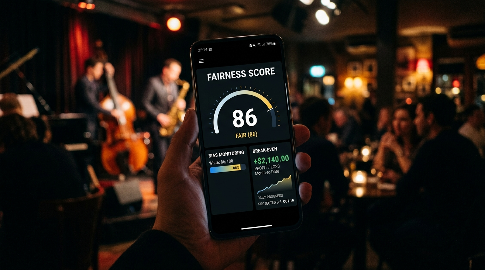

FairGig and the Evolution of Live Music Economics
For decades, the live music industry has operated under the shadow of "The Discovery Fallacy." This pervasive misconception suggests that the primary hurdle for independent artists is discovery—the idea that if only more fans could find them, their financial woes would vanish. However, industry veterans and data-driven analysts are beginning to expose a much darker reality: the actual crisis is one of economic opacity and a systemic lack of standardized financial tools.
While platforms like Bandsintown and Eventbrite focus on marketing and ticketing, they leave the underlying economic settlement—the actual flow of money between venue and artist—in a state of primitive chaos. The current live music economy is characterized by fragmented communication, "handshake" deals made via text or email, and a total absence of an immutable audit trail. This environment allows for a predatory "Risk Shift," where venues insulate themselves from loss by pushing 100% of the financial downside onto the talent. FairGig emerges not as another discovery tool, but as a "Financial Truth Layer"—a strategic operating system designed to replace blind hope with mathematical certainty.
The Anatomy of
Market Opacity
and
Risk Displacement
The traditional live music industry is built on a foundation of information asymmetry. Venues and promoters often maintain dominance by obscuring the financial realities of a show until after the performance is over. This lack of transparency manifests in several destructive ways:
- Hidden Production Fees: Frequently clawed back from gross earnings without prior itemization, covering venue overhead like sound, lighting, and security.
- Pay-to-Play Models: Forcing artists to act as the venue's primary sales force, requiring upfront ticket purchases or minimum guarantees that ensure the house wins even if the room is empty.
- Opaque Settlement: Final payouts are often calculated in informal settings—frequently at 2 AM in a loud club—making it nearly impossible for an artist to audit the math or dispute a discrepancy.
This "Risk Shift" model treats artist-borne fees as a guaranteed revenue floor for the venue. When a show underperforms, the artist absorbs the debt while the venue remains protected. FairGig’s mission is to penetrate this settlement layer and replace these predatory practices with a structured, data-driven framework.

The Five Pillars of the Financial Operating System
To address these systemic failures, FairGig has developed a "Strategic Wedge" in the form of a Financial Operating System. Unlike generic solutions that focus on the "fan experience," FairGig focuses on artist solvency. The platform is built on five functional pillars designed to provide measurable trust:
- Home Dashboard: A centralized command center that tracks key performance metrics and historical financial health.
- Deal Engine: A tool using standardized input parameters to turn vague verbal promises into structured financial data.
- Show Simulator: The core differentiator that allows artists to model payouts before signing a contract.
- Settlement System: An automated post-show financial waterfall that removes human error and disputes.
- Reputation Layer: A system of fairness scores and artist ratings that makes venue behavior measurable and public.
By integrating these pillars, FairGig transforms the live music deal from a risky gamble into a professional, audited transaction.
Weaponizing the Math:
The Show Economics Simulator
The Show Economics Simulator is the primary tool for mitigating financial ambiguity. It allows artists to replace "blind hope" with a mathematical proof of a show’s reality. By inputting variables such as ticket price, deal type (guarantee vs. split), and exact production fees, the engine runs instant calculations for three scenarios: the Empty Room, the Likely Crowd, and the Sold Out show.
# The FairGig Break-Even Logic
def calculate_break_even(fees, production_cost, ticket_price):
"""
Calculates the number of tickets required to cover all costs.
"""
total_overhead = fees + production_cost
break_even_tickets = total_overhead / ticket_price
return break_even_tickets
# Example: $400 venue fee + $400 marketing cost at a $10 ticket price
# Result: 80 tickets required just to reach $0 net profit.
By using this simulator, artists can "weaponize" their known audience draw. If an artist can prove a consistent draw of 200 fans, they no longer have to accept opaque club rates; they can demand higher percentage splits or upfront guarantees based on projected revenue data. This shifts the negotiation from a plea for opportunity to a data-backed business proposal.
The Reputational Premium & Market Adoption
FairGig employs a unique market mechanism to overcome the hurdle of venue adoption. The strategy is built on a growth flywheel that starts with the artists. By offering the simulation and deal-tracking tools to artists for free, FairGig builds a massive supply-side user base.
Once a significant portion of the talent pool expects financial transparency, a venue’s absence from the platform becomes a reputational cost—a signal to artists that the venue may be hiding costs or providing unreliable payouts. This creates a forced choice for venues: adopt the platform to attract high-quality talent, or remain opaque and lose their supply of artists to competitors who prove their deals are fair. The Reputation Layer further enforces this by tracking "Fairness Scores" and "Payout Reliability." Promoters who are honest about their costs actually benefit from this system, as it builds long-term trust and loyalty with the artists they book.
Strategic Scaling: From Utility to Enterprise SaaS
The FairGig business model is designed for scalable monetization across three distinct phases:
- Phase 1 (User Acquisition): Offering the MVP as a free utility for artists, seeding the ecosystem with informed talent.
- Phase 2 (Platform Monetization): Introducing a 2-5% per-show settlement fee and premium venue profiles for those looking to attract top-tier acts.
- Phase 3 (Enterprise SaaS): Expanding into a full model for promoters and venues, offering advanced financial reporting, CRM tools, and fan monetization features.
This roadmap ensures that FairGig doesn't just solve a temporary problem, but becomes the permanent infrastructure for the live music economy. The platform’s development is guided by industry veterans like Cliff Franco, whose 15+ years of experience fronting bands like The Pursuit and The Struggs provide the necessary "on-the-ground" context to ensure the software solves real-world pain points.
The era of the "handshake deal" is coming to an end.
FairGig represents a fundamental shift in the live music industry—a move away from the vanity metrics of discovery and toward the essential metrics of solvency. By creating a "Financial Truth Layer," the platform empowers artists to protect their livelihoods through mathematical rigor and transparency. In the new landscape established by FairGig, the industry standard is simple: before you guessed, now you know.